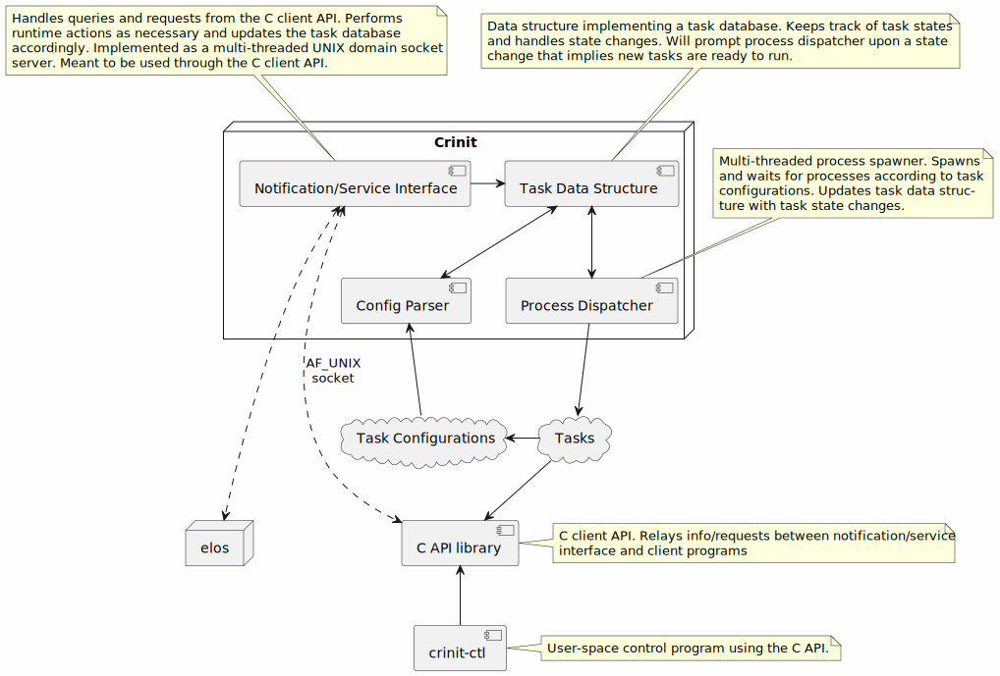

Crinit – Configurable Rootfs Init¶
In a Nutshell¶
Crinit is an init daemon executed as PID 1 by the Linux Kernel. It reads a global configuration (“series”-file) either
specified on the command line or from /etc/crinit/default.series. The series file in turn may reference further
configuration files or a whole directory from which all configs shall be loaded. Each one defines a task potentially
containing a set of commands and dependencies on other tasks.
The specified tasks are then started with as much parallelism as dependencies allow, i.e. tasks without any dependencies are spawned as soon as possible after Crinit has been started. Once a task is spawned, finished, or has failed, its dependent tasks are updated and spawned as necessary.
Concept¶
The below diagram shows the overall concept of Crinit.

Not indicated in the diagram are planned cryptographic features of the Config Parser intended to provide optional verification/integrity checking of the global and task configurations.
Features¶
Crinit currently has the following features implemented:
starting of tasks with parallelism and dependency-resolution
tasks may have one or multiple commands, or none to form a dependency group
dependencies can be either on specific task state changes or on “features” another (unknown) task will provide
a C client API and a command-line interface using it (
crinit-ctl) capable ofadding new tasks
managing (stop, kill, restart, …) already loaded tasks
querying task status
handling reboot and poweroff
a basic source-compatible implementation of
sd_notify()
task IO redirection (like shell pipes)
to files, for example for basic logging purposes
to named pipes, to pipe output between tasks
task environment variable management
a global environment can be set
task-specific local settings can override and/or extend the global environment
include files to maintain task configuration presets
optional integration with elos
support for events send by elos as task dependencies
In addition the following features are currently work-in-progress:
ability to report task state changes back to elos
optional signature checking of Crinit’s configuration files
In the future we also plan to support:
restriction of processes started/managed by Crinit
UID/GID, capabilities, cgroups,…
There are example configurations below which show how to use the currently implemented features.
For detailed explanations of Crinit’s inner workings please refer to the Doxygen documentation generated during build.
The client API is documented in the Doxygen documentation of crinit-client.h. The API is implemented as a shared
library (libcrinit-client.so).
This repository also includes an example application to generate a /etc/machine-id file, which is used to uniquely
identify the system (for example by elosd). The machine-id-gen tool is supposed to be called on boot, for example
from earlysetup.crinit as shown in the example configuration files contained in this repository. Its implementation
either uses the value for systemd.machine_id given on the Kernel command line or – on an NXP S32G-based board – the
unique ID burned to on-chip OTP memory. If the Kernel command line value is set, it always takes precedence and any
physical memory OTP reads are omitted. This means that while the application has special functionality for S32G SoCs,
it can work on any target as long as the Kernel command line contains the necessary value.
License¶
MIT License
Copyright (c) [2023] [emlix GmbH, Elektrobit Automotive GmbH]
The full text of the license can be found in the LICENSE file in the repository root directory.
Powered by EB¶
Elektrobit is an automotive software company and developer of embedded software products for ECU, AUTOSAR, automated driving, connected vehicles and UX. Crinit is an integrated part of EB corbos Linux.
EB corbos Linux – built on Ubuntu - is an open-source operating system for high-performance computing, leveraging the rich functionality of Linux while meeting security and industry regulations.
Maintainers¶
Andreas Zdziarstek andreas.zdziarstek@emlix.com @gmcn42
Thomas Brinker thomas.brinker@emlix.com @ThomasBrinker
Credits¶
Andreas Schickedanz
Andreas Zdziarstek
Anja Lehwess-Litzmann
Annika Schmitt
Anton Hillebrand
Daniel Glöckner
Rainer Müller
Stefan Kral
Thomas Brinker
Wolfgang Gehrhardt
Artwork¶
The crinit logo is the Swallow (Hirundinidae). A quick and small bird able to fly long distances. Originator is Anja Lehwess-Litzmann (emlix GmbH). Year 2023. It is licensed under Creative Commons No Derivatives (CC-nd). It shall be used in black on white or HKS43 color.
Details¶
Configuration¶
As described above, Crinit needs a global series-file containing global configuration options as well as a list of task
configurations. Examples for a local demonstration inside the build environment (see [Build
Instructions](#Build Instructions) below) are available in config/test/ and examples to use as a starting point for a
minimal system boot are available in config/example/.
The general format of crinit configuration files is INI-style KEY = value pairs. Some settings may be array-like,
meaning they can be specified multiple times to append values. Leaving out the KEY = part at the start of the line in
favor of at least one whitespace character is shorthand for appending to the last key, for example:
ARRAY_LIKE_KEY = value 1
ARRAY_LIKE_KEY = value 2
is equivalent to
ARRAY_LIKE_KEY = value 1
value 2
Example Global Configuration¶
An example to boot a minimal environment may look like this:
# Crinit global configuration file
TASKS = earlysetup.crinit check_qemu.crinit network-dhcp.crinit
sshd.crinit getty.crinit
TASKDIR = /etc/crinit
TASK_FILE_SUFFIX = .crinit
TASKDIR_FOLLOW_SYMLINKS = YES
INCLUDEDIR = /etc/crinit
INCLUDE_SUFFIX = .crincl
DEBUG = NO
SHUTDOWN_GRACE_PERIOD_US = 100000
USE_SYSLOG = NO
USE_ELOS = YES
ELOS_SERVER = 192.168.3.43
ELOS_PORT = 2342
ENV_SET = FOO "foo"
ENV_SET = FOO_BAZ "${FOO} baz"
ENV_SET = GREETING "Good morning!"
Explanation¶
TASKS – The task configurations to load. This is an optional setting. If not set, TASKDIR will be scanned for task configuration files. (array-like)
TASKDIR – Where to find the task configurations, will be prepended to the filenames in TASKS. Default:
/etc/crinitTASK_FILE_SUFFIX – Filename suffix of task configurations. Only relevant if TASKS is not set. Default:
.crinitTASKDIR_FOLLOW_SYMLINKS – If symbolic links should be followed during scanning of TASKDIR. Only relevant if TASKS is not set. Default: YES
INCLUDEDIR – Where to find include files referenced from task configurations. Default: Same as TASKDIR.
INCLUDE_SUFFIX – Filename suffix of include files referenced from task configurations. Default:
.crinclDEBUG – If crinit should be verbose in its output. Either
YESorNO. Default:NOSHUTDOWN_GRACE_PERIOD_US – The amount of microseconds to wait between
SIGTERMandSIGKILLon shutdown/reboot. Default: 100000USE_SYSLOG – If syslog should be used for output if it is available. If set to
YES, Crinit will switch to syslog for output as soon as a task filePROVIDESthesyslogfeature. Ideally this should be a task file loading a syslog server such as syslogd or elosd. Default:NOUSE_ELOS – If Elos should be used as event based dependency provider if it is available. If set to
YES, Crinit will allow Elos event filters as task dependency with the@elosprefix as soon as a task filePROVIDEStheelosfeature. Ideally this should be a task file loading the Elos daemon elosd. Default:NOELOS_SERVER – Ip address of the elos server. Default:
127.0.0.1ELOS_PORT – Port of the elos server. Default:
54321ENV_SET – See section Setting Environment Variables below. (array-like)
FILTER_DEFINE – See section Defining Elos Filters below. (array-like)
Example Task Configuration¶
The network-dhcp.crinit from above could for example look like this:
# DHCP config for a minimal system
NAME = network-dhcp
INCLUDE = daemon_env_preset
COMMAND = /bin/mkdir -p /var/lib/dhcpcd
/bin/mount -t tmpfs none /var/lib/dhcpcd
/bin/touch /var/lib/dhcpcd/resolv.conf
/bin/mount -o bind /var/lib/dhcpcd/resolv.conf /etc/resolv.conf
/sbin/ifconfig lo up
/sbin/ifconfig lo 127.0.0.1
/sbin/dhcpcd -j /var/log/dhcpcd.log eth0
DEPENDS = check_qemu:fail earlysetup:wait @provided:writable_var
PROVIDES = ipv4_dhcp:wait resolvconf:wait
RESPAWN = NO
RESPAWN_RETRIES = -1
ENV_SET = FOO_BAR "${FOO} bar"
ESCAPED_VAR "Global variable name: \${FOO}"
VAR_WITH_ESC_SEQUENCES "hex\t\x68\x65\x78"
GREETING "Good evening!"
IO_REDIRECT = STDOUT "/var/log/net-dhcp.log" APPEND 0644
IO_REDIRECT = STDERR STDOUT
Explanation¶
NAME – The name given to this task configuration. Relevant if other tasks want to depend on this one. This is a mandatory setting.
INCLUDE – See section Include files below. (array-like)
COMMAND – The commands to be executed in series. Executable paths must be absolute. Execution will stop if one of them fails and the whole task will be considered failed. The whole task is considered finished (i.e. the
network-dhcp:waitdependency is fulfilled) if the last command has successfully returned. If no COMMAND is given, the task is treated as a dependency group or “meta-task”, see below. (array-like)DEPENDS – A list of dependencies which need to be fulfilled before this task is considered “ready-to-start”. Semantics are
<taskname>:{fail,wait,spawn}, wherespawnis fulfilled when (the first command of) a task has been started,waitif it has successfully completed, andfailif it has failed somewhere along the way. Here we can see this task is only run if and after theearlysetup(setup of system directories, etc.) has fully completed and thecheck_qemutask has determined we are not running inside the emulator and therefore exited with an error code. This may be left out or explicitly set to empty using""which is interpreted as “no dependencies”. There is also the special@provided:featuresyntax where we can define we want to depend on a specific feature another task may implement (see PROVIDES). In this case@provided:writable_varcould mean that another task may have mounted a tmpfs or a writable partition there which we need for the firstmkdir. That task would need to advertise thewritable_varfeature in itsPROVIDESconfig value. (array-like) Additionally there is an optional feature that allows tasks to be started based on system events issued by elos. Tasks depending on an elos event can use the@elos:<filter_name>syntax to specify a task dependency that is fullfilled as soon as the specified elos filter triggers. The filters themself can be specified using the FILTER_DEFINE keyword.PROVIDES – As we have seen above, a task may depend on features and also provide them. In this case we advertise that after completion of this task (
wait), the featuresipv4_dhcpandresolvconfare provided. Another task may then depend e.g. on@provided:resolvconf. While the feature names chosen here reflect the functional intention, they can be chosen arbitrarily. (array-like)RESPAWN – If set to
YES, the task will be restarted on failure or completion. Useful for daemons likegetty.RESPAWN_RETRIES – Number of times a respawned task may fail in a row before it is not started again. The special value
-1is interpreted as “unlimited”. Default: -1ENV_SET – See section Setting Environment Variables below. (array-like)
FILTER_DEFINE – See section Defining Elos Filters below. (array-like)
IO_REDIRECT – See section IO Redirections below. (array-like)
Setting Environment Variables¶
Crinit supports setting environment variables in the global and task configurations as shown above. The variables in the
global config are valid for all tasks and may be locally overriden or referenced. The above examples together would
result in the following list of environment variables for the task network-dhcp (with explanatory comments).
FOO=foo
FOO_BAZ=foo baz # Expansion of variable set before in the same config.
FOO_BAR=foo bar # Expansion of global variable in task-local variable.
GREETING=Good evening! # Override of global variable.
ESCAPED_VAR=Global variable name: ${FOO} # Avoid variable expansion through escaping.
VAR_WITH_ESC_SEQUENCES=hex hex # Support for escape sequences including hexadecimal bytes.
Defining Elos Filters¶
Crinit supports an optional feature, which enables a task to depend on specific system events issued by the elos event logger.
In order to depend on elos events, a task uses the @elos dependency prefix in conjunction with a elos filter name. The corresponding
filter has to be defined within the task itself or within the global environment. The definition follows the syntax of normal
environment variables, but uses the FILTER_DEFINE prefix instead:
FILTER_DEFINE = <filter_name> <filter_rule>
For example:
NAME = elos_ssh_event_task
COMMAND = /bin/echo "Event task has been run."
FILTER_DEFINE = SSHD_FILTER ".event.source.appName 'sshd' STRCMP"
DEPENDS = @elos:SSHD_FILTER
Ruleset¶
A configuration file may have an unlimited number of
ENV_SETstatements, each specifying a single environment variable.ENV_SETstatements must be of the formENV_SET = VARIABLE_NAME "variable content". The quotes around the variable content are mandatory and will not appear in the environment variable itself.Setting the same variable twice overrides the first instance.
Variables can be referenced/expanded using shell-like
${VARIABLE_NAME}syntax.Expansion can be avoided by escaping with a
\.
Variables can reference all other variables set before it, globally and locally.
Variables are set/processed in the order they appear in the config file.
Common escape sequences are supported:
\a, \b, \n, \t, \$, \\, \x<two digit hex number>.
Include files¶
A crinit task configuration may reference multiple include files at any point in the task file. The effect is the same as manually copying the contents of the include file at exactly that point in the task config, similar to C includes. Additionally, it is possible to define an import list if not all settings in the include file should be applied.
An INCLUDE statement looks like
INCLUDE = <include_name> [list,of,imported,settings]
where <include_name> is the filename of the include without the ending and without the leading path. The imported
settings are defined as a comma-separated list of possible configuration options. If omitted, everything in the include
file is taken.
Currently only IO_REDIRECT, DEPENDS, and ENV_SET are supported in include files.
Example:
INCLUDE = server_settings ENV_SET,IO_REDIRECT
Imports only the ENV_SET and IO_REDIRECT settings from (assuming default values for include dir and suffix)
/etc/crinit/server_settings.crincl.
server_settings.crincl could look like
ENV_SET = HTTP_PORT "8080"
IO_REDIRECT = STDOUT /some/file.txt
IO_REDIRECT = STDERR STDOUT
DEPENDS = @provided:network
In the above case, the DEPENDS setting would be ignored.
IO Redirections¶
Crinit supports per-task IO redirection to/from file and between STDOUT/IN/ERR using IO_REDIRECT statements in the
task configurations. The statements are of the form
<REDIRECT_FROM> <REDIRECT_TO> [ APPEND | TRUNCATE | PIPE ] [ OCTAL_MODE ]
Where REDIRECT_FROM is one of { STDOUT, STDERR, STDIN }, and REDIRECT_TO may either also be one of those streams
or an absolute path to a file. APPEND or TRUNCATE signify whether an existing file at that location should be
appended to or truncated. Default is TRUNCATE. The special value PIPE is discussed below (see Named Pipes).
OCTAL_MODE sets the permission bits if the file is newly created. Default is 0644.
Accordingly the statements in the example configuration above will result in stdout being redirected to the file
/var/log/net-dhcp.log in append mode. If the file does not yet exist, it will be created with permission bits 0644.
The second statement then redirects stderr to stdout, capturing both in the log.
Other examples could be
IO_REDIRECT = STDERR "/var/log/err.log" APPEND
IO_REDIRECT = STDOUT "/dev/null"
to silence stdout and log stderr, or
IO_REDIRECT = STDIN /opt/data/backup.tar
IO_REDIRECT = STDOUT /opt/data/backup.tar.gz
to read stdin from file and capture stdout to another file. Stderr will go to console as normal.
Named pipes¶
As indicated above, crinit also accepts the setting PIPE instead of APPEND or TRUNCATE. With this setting,
crinit will ensure that the given path is a named pipe (also called a FIFO special file). This is useful to pipe the
output of one task to another.
A common example would be redirection of output to syslog. For that we would create two task files, one as the sender
and another as the receiver (using the logger utility provided by e.g. busybox and others).
Sending Task
NAME = some_task
COMMAND = /bin/echo "This output will be redirected to syslog!"
RESPAWN = NO
DEPENDS = ""
IO_REDIRECT = STDOUT "/tmp/some_task_log_pipe" PIPE 0640
Receiving Task
NAME = some_task_logger
COMMAND = /usr/bin/logger -t some_task
RESPAWN = YES
DEPENDS = ""
IO_REDIRECT = STDIN "/tmp/some_task_log_pipe" PIPE 0640
This will redirect the output of the echo command to the input of the logger utility and thereby to syslog. As is
shown, it is also possible to set permissions for named pipes (default will also be 0644). It should be kept in mind
to keep the permissions the same in both tasks. Setting different permissions in the sending and receiving task of a
pipe creates a race condition where one of the tasks will be able to create the named pipe with its settings. The other
task will take it as-is, as long as it can access the file.
A note on buffering¶
By default, glibc will switch from line- to block-buffered mode when redirecting a stream to file. This may make it
hard to use e.g. tail -f ... to monitor the output in parallel. To get around that problem, one may use the stdbuf
utility (part of GNU coreutils).
In a crinit task, the following
NAME = line_buffered_task
COMMAND = /usr/bin/stdbuf -oL -eL <SOME_EXECUTABLE>
IO_REDIRECT = STDOUT "/some/where.txt"
STDERR "/some/where/else.txt"
will result in line-buffered output to the files which can be monitored easily. For more details, see the stdbuf man
page.
Dependency groups (meta-tasks)¶
A dependency group or meta-task is a task without any COMMANDs. The provided dependencies of the meta-task will be fulfilled immediately once its own dependencies are fulfilled. This can be used to semantically combine different dependencies into one. Reasons to do that can be semantic readability of the configs or to provide hook dependencies for third-party applications having an opaque view of their target system.
As an example a dependency group and a task using it could look like
NAME = dep_grp_server
DEPENDS = @provided:sql-db @provided:network @provided:firewall-open-port httpd:spawn
PROVIDES = server:wait
NAME = local_http_client
COMMAND = /usr/bin/some-http-request localhost
DEPENDS = @provided:server
# or, with same effect: DEPENDS = dep_grp_server:wait
Semantically, this would mean local_http_client only cares about the server, as a singular entity, being set up and running. This could
also be delivered by a third party with only the interface knowledge “You need to wait for the server dependency”. How
to provide this dependency, with which tasks, and in what order is then up to the system integrator who maintains
dep_grp_server.
crinit-ctl Usage Info¶
crinit-ctl is a CLI control program for crinit wrapping the client API functionality.
Below is its help output:
USAGE: crinit-ctl <ACTION> [OPTIONS] <PARAMETER> [PARAMETERS...]
where ACTION must be exactly one of (including specific options/parameters):
addtask [-f/--overwrite] [-i/--ignore-deps] [-d/--override-deps "depA:eventA depB:eventB [...]"] <PATH>
- Will add a task defined in the task configuration file at <PATH> (absolute) to Crinit's task database.
'-f/--overwrite' - Lets Crinit know it is fine to overwrite if it has already loaded a task
with the same name.
'-d/--override-deps <dependency-list>' - Will override the DEPENDS field of the config file
with what is given as the parameter.
'-i/--ignore-deps' - Shortcut for '--override-deps ""'.
addseries [-f/--overwrite] <PATH>
- Will load a series file from <PATH>. Options set in the new series file take precedence over
current settings.
'-f/--overwrite' - Lets Crinit know it is fine to overwrite if it has already loaded tasks
with the same name as those in the new series file.
enable <TASK_NAME>
- Removes dependency '@ctl:enable' from the dependency list of <TASK_NAME> if it is present.
disable <TASK_NAME>
- Adds dependency '@ctl:enable' to the dependency list of <TASK_NAME>.
stop <TASK_NAME>
- Sends SIGTERM to the PID of <TASK_NAME> if the PID is currently known.
kill <TASK_NAME>
- Sends SIGKILL to the PID of <TASK_NAME> if the PID is currently known.
restart <TASK_NAME>
- Resets the status bits of <TASK_NAME> if it is DONE or FAILED.
status <TASK_NAME>
- Queries status bits and PID of <TASK_NAME>.
notify <TASK_NAME> <"SD_NOTIFY_STRING">
- Will send an sd_notify-style status report to Crinit. Only MAINPID and READY are
implemented. See the sd_notify documentation for their meaning.
list
- Print the list of loaded tasks and their status.
reboot
- Will request Crinit to perform a graceful system reboot. crinit-ctl can be symlinked to
reboot as a shortcut which will invoke this command automatically.
poweroff
- Will request Crinit to perform a graceful system shutdown. crinit-ctl can be symlinked to
poweroff as a shortcut which will invoke this command automatically.
General Options:
--verbose/-v - Be verbose.
--help/-h - Print this help.
--version/-V - Print version information about crinit-ctl, the crinit-client library,
and -- if connection is successful -- the crinit daemon.
Build Instructions¶
Executing
ci/docker-run.sh
will start a Docker container for the native host architecture with all necessary programs to build Crinit and its Doxygen documentation and to run a short local demonstration.
It is possible to run the Docker container for a foreign architecture such as arm64 with the help of qemu-user-static and binfmt-support. Make sure these packages are installed on your host system if you want to use this functionality. All following commands to be run inside the container will be the same regardless of the architecture.
ci/docker-run.sh arm64
By default, ci/docker-run.sh will use a container based on Ubuntu Jammy. If another version is desired, it can be
specified as a second parameter. For example, you can run a Lunar-based container using
ci/docker-run.sh amd64 lunar
Inside the container, it is sufficient to run
ci/build.sh
which will compile the release configuration for crinit, the client library and crinit-ctl as well as a suite of RPMs.
The doxygen documentation is built as well. The script will copy relevant build artifacts to result/.
For debugging purposes, the debug configuration can be built with the following command. Optionally it is also possible
to enable AddressSanitizer (ASAN) for additional runtime checks or static analysis using -fanalyzer at compile-time.
ci/build.sh Debug --asan --analyzer
Afterwards, it is possible to run (also inside the container)
ci/demo.sh
for a short local demonstration of crinit’s client API using crinit-ctl.
A clang-tidy analysis of the source can be performed using
ci/clang-tidy.sh
This will also generate a compile_commands.json. The output will be saved to result/clang-tidy.
Unit tests or smoke tests can be run using the respective commands below. For the debug configuration, either of them
takes an additional Debug argument.
ci/run-utest.sh
ci/run-smoketests.sh
In order to run integration tests, you can use ci/run-integration-tests.sh. This will set up two docker containers,
one for the Robot test framework and one that runes Crinit and Elos, and execute all integration tests inside the robot container.
ci/run-integration-tests.sh
You can also manually start both containers with ci/docker-target-run.sh and ci/docker-integration-run.sh. Adapt the configuration within
the robot container by changing the ip address of the target container within the robot variables (test/integration/robot_variables.py)
to the current ip of the target container and run the tests by executing test/integration/scripts/run-integration-tests.sh inside
the robot container.
After a successful execution of ci/build.sh, it is also possible to create a Debian package using debbuild.
For the debug configuration, this also takes an additional Debug argument.
ci/package.sh
If a manual test build is desired, running the following command sequence inside the container will setup the build system and build native binaries.
mkdir -p build/amd64
cmake -B build/amd64 -DCMAKE_BUILD_TYPE=Debug -DCMAKE_VERBOSE_MAKEFILE=On -DUNIT_TESTS=On
make -C build/amd64
The Doxygen documentation alone can be built using
make -C build/amd64 doxygen